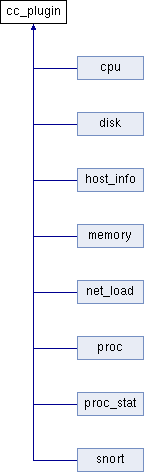

Inheritance diagram for cc_plugin:

Public Member Functions | |
| virtual std::string | plugin_class ()=0 |
| Returns the name of the plugin. | |
| virtual bool | generate_and_publish_information (DDSDynamicDataWriter *writer, DDS_DynamicData *data)=0 |
| The plugin gathers the information and publishes it. | |
| virtual bool | publish_information (DDSDynamicDataWriter *writer, DDS_DynamicData *data) |
| Plugins must use this method to publish the information in generate_and_publish_information(). | |
| void | destroy_plugin () |
| Deletes the plugin. | |
Detailed Description
Definition at line 29 of file plugin.hpp.
Member Function Documentation
| void cc_plugin::destroy_plugin | ( | ) | [inline] |
Deletes the plugin.
Deletes the plugin using the C++ function delete().
Definition at line 82 of file plugin.hpp.
| virtual bool cc_plugin::generate_and_publish_information | ( | DDSDynamicDataWriter * | writer, | |
| DDS_DynamicData * | data | |||
| ) | [pure virtual] |
The plugin gathers the information and publishes it.
- Parameters:
-
writer A pointer to the DDS DynamicDataWriter. data A pointer to the DDS Dynamic Data to fill.
- Returns:
- Returns true if everything was correct and false if not.
Implemented in cpu, disk, host_info, memory, net_load, proc, proc_stat, and snort.
| virtual std::string cc_plugin::plugin_class | ( | ) | [pure virtual] |
| virtual bool cc_plugin::publish_information | ( | DDSDynamicDataWriter * | writer, | |
| DDS_DynamicData * | data | |||
| ) | [inline, virtual] |
Plugins must use this method to publish the information in generate_and_publish_information().
Abstracts plugin developers from the publication of the gathered information using DDS. Therefore, each plugin must call this method whithin generate_and_publish_information() to publish.
- Parameters:
-
writer A pointer to the DDS DynamicDataWriter. data A pointer to the filled DDS Dynamic Data.
- Returns:
Definition at line 65 of file plugin.hpp.
The documentation for this class was generated from the following file:
- main/plugin.hpp
Generated on Mon Jun 27 2011 16:03:48 for cavecanem by
 1.7.1
1.7.1